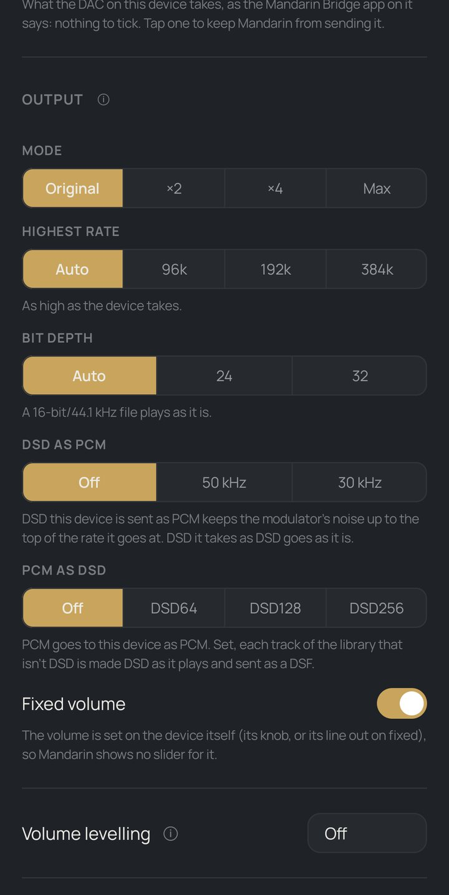

Upsampling and output
Each streamer, DAC, Mandarin Bridge or Squeezelite player has its own Output: play the file as it is, or upsample it, make it DSD, and choose how far it goes. Settings → Audio Devices → a device → Output.
It opens with Sound, its settings as recipes: Bit-perfect; where the device takes more than 48 kHz, Upsampled with the Standard filter, with the Gaussian ones, with them in minimum phase, and with the Very long filter and shaped dither; where it takes DSD, DSD at its highest multiple with the 7th-order modulator. Each says what it does for that device, the one in use marked; a tap sets what it names. Custom, or any row changed, opens Advanced, every row of the Output below.
- Mode Original · ×2 · ×4 · Max
- Original sends each track at its own rate. ×2 and ×4 upsample it (44.1 kHz to 88.2 or 176.4 kHz); Max goes to the highest rate the device takes in the track's family. Upsampling is made on the server in 64-bit float.
- Filters CD-rate · hi-res
- One filter for CD-rate sources and one for hi-res ones (or the same), each from the list: Standard (SoX's for PCM, Mandarin's own on the way to DSD), Gentle (rolls off earlier, rings for half as long), Gaussian (smooth, very short ringing, the top of a CD a little down), Gaussian steep (flat almost to 22 kHz, every sample of the file kept), Gaussian hi-res (for 88.2 kHz and up), and Long and Very long: the standard filter made 8 and 32 times as long, flat to 21.8 and 21.9 kHz for a CD and 270 and 284 dB down from 22.1 kHz, a track taking 0.15 and 0.6 s longer to start (Very long some 400 MB while it plays). Made as the track plays, and used for PCM as DSD too.
- Phase Linear · Minimum
- For both filters. In minimum phase a filter keeps its levels at every frequency and puts its ringing after a sound (0.15 ms before it at most, where the linear filters ring 0.2 to 47 ms before). Gaussian steep keeps every sample of the file only in linear phase.
- Highest rate Auto · 96k · 192k · 384k
- Nothing goes above it, upsampled or not. Auto: as high as the device takes. ×16 (705.6 and 768 kHz) goes as WAV where the device takes WAV.
- Bit depth Auto · 24 · 32
- The depth a converted or upsampled track is sent at: Auto is 24 (32-bit FLAC only where a device is set to 32). On Auto a 16-bit/44.1 kHz file plays as it is.
- Real bits and Dither As sent · 23–20 · Flat · Shaped 3rd · Shaped 5th
- Where Mandarin makes the PCM (upsampled, not made DSD): the bits the DAC resolves above its own noise, the dither put in at that bit, and how: Flat (the default), or Shaped of the 3rd or 5th order, its noise moved above the audio band (made at 88.2 kHz and up).
- DSD as PCM Off · 50 kHz · 30 kHz
- For DSD sent to this device as PCM: take the DSD modulator's ultrasonic noise off above 50 or 30 kHz. Off keeps it, up to the top of the rate it goes at. DSD the device takes as DSD goes as it is.
- PCM as DSD Off · DSD64 · DSD128 · DSD256
- For a device that takes DSD: each track of the library that isn't DSD is made DSD as it plays and sent as a DSF, gapless from track to track. A 48 kHz-family track stays in its own family. The Output says how fast this server makes it, and whether that keeps up.
- Modulator 7th order · 7th order wide · 9th order
- How PCM is made DSD: the 7th order; the 7th order wide, which holds its noise down to 50 kHz (DSD128 and DSD256); or the 9th order, quieter in the audio band (DSD64 and DSD128).
- Player UPnP · Its own player
- Where a renderer has MPD beside it, as a Chord Poly does: Mandarin can hand MPD the queue, and MPD plays one track into the next by itself, as it plays its own library.
- Gapless Albums as one stream
- An album's tracks go to the device as one stream, start to end, gapless however it joins files. A Mandarin Bridge is played one continuous stream anyway, and a Squeezelite player joins tracks from its own buffer.
- Fixed volume
- The volume is set on the device itself (its knob, or a line out on fixed), so Mandarin shows no slider and never scales the samples.
- Volume levelling Off · Track · Album · Auto
- ReplayGain for this device, to a target from −14 to −25 LUFS. Auto plays albums at album level and mixed tracks at track level.

Headroom, and clipping shown
A track mastered to full scale has peaks between its samples above it, which upsampling would clip. Each making counts the samples it clips: Now playing's upsampling line turns red, and the signal path says how many and how far over. Headroom when upsampling, in a device's Output, is Auto by default: a track Mandarin upsamples, or makes DSD of, is turned down by what its true peak needs after levelling, and half a dB more (DSD's own room allowed for); a track that doesn't need it keeps its level. Off leaves every track as it is.
Keeping up, and a safety net
A track made as it plays says in its signal path how fast it is made (Keeping up at 4.2× real time); slower than real time, Now playing says it is falling behind. Each device keeps the Output that last played well: an Output this server can't make in time, or that the device can't play, is put back to that one, the track playing on from where it was, and the device's page says what happened. Never for a Qobuz or Tidal stream.
DSP
Below Output, a device's DSP: a parametric EQ of up to ten bands, headphone profiles from AutoEq, and room correction from an impulse response (a WAV from REW, Dirac or a headphone measurement), one for each rate or a zip of them. A device's DSP runs in this order: volume levelling, then the headroom, then the DSP at the track's own rate, then upsampling.
The processor
Upsampling and making DSD take far less of the processor than they did, with the same output: PCM as DSD256 takes 37% of one core per second of music where it took 68%, and upsampling ×16 runs 1.5 times as fast (measured on a 2.1 GHz Xeon). A track upsampled or made DSD as it plays gets the processor: playback keeps all the cores but one while it is made, or as many as Settings → Library Scanner → Processor → Cores for upsampling and DSD says (Auto, 1, 2 or 3). It is made some 30 seconds ahead of what the device has read, not flat out to its end.
For a bit-perfect result
Choose Bit-perfect under the device's Output (Mode Original) and set its volume to fixed (or the DAC's own): upsampling, DSD from PCM, DSP, volume levelling and a volume in software all change the samples, on purpose. The signal path shows what was done, and SQ-tool proves it.
A phone with a USB DAC
This phone has the same Output when it plays through a USB DAC (Settings → Audio Devices → This phone → Output): the server makes the upsampled or DSD stream, and the app's USB driver plays it, DSD natively or as DoP.